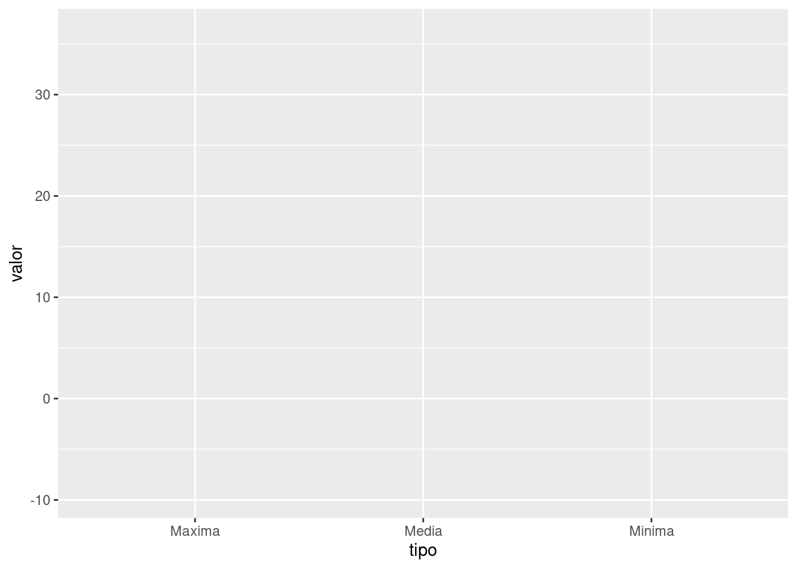
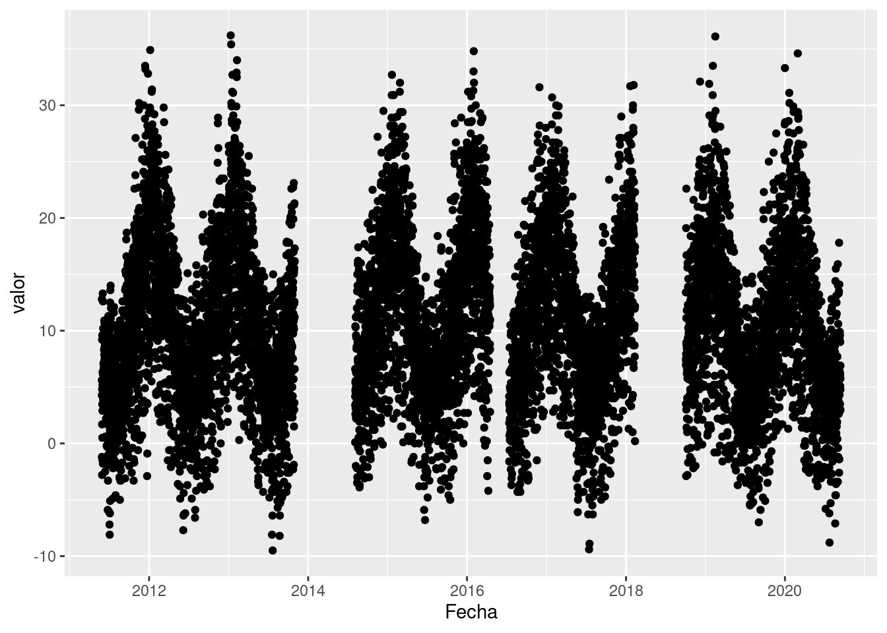

Visualizar datos es útil para identificar a relación entre distintas variables pero también para comunicar el análisis de los datos y resultados. El paquete ggplot2 permite generar gráficos de gran calidad en pocos pasos. Cualquier gráfico de ggplot tendrá como mínimo 3 componentes: los datos, un sistema de coordenadas y una geometría (la representación visual de los datos) y se irá construyendo por capas.
Primera capa: el área del gráfico
Cómo siempre será necesario cargar los paquetes que vamos a usar y ya que estamos la base de datos de Bariloche con la que estuvimos trabajando anteriormente.
library(ggplot2) # El paquete del momento
library(dplyr)
library(readr)
library(tidyr)
bariloche <- readr::read_csv("datos/bariloche_enlimpio.csv") %>%
select(Fecha, starts_with("Temperatura")) %>%
pivot_longer(cols = -Fecha,
names_to = "variable_lugar_altura_tipo",
values_to = "valor") %>%
separate(col = variable_lugar_altura_tipo,
into = c("variable", "lugar", "altura", "tipo"),
sep = "_") %>%
mutate(tipo = if_else(is.na(tipo), "Media", tipo))
Tip: Es muy común tener que manipular y limpiar los datos para poder utilizarlos tal como hicimos con las observaciones de Bariloche. En este caso esa manipulación no requiere de mucho tiempo porque se tratan de pocos datos. Si estuvieras trabajando con muchos datos o haciendo una manipulación que requiere mucho tiempo de computo, es recomendable guardar esa nueva versión es un nuevo archivo. Pero, es muy importante guardar el código que generó esa nueva versión de la base de datos, nunca se sabe cuando habrá que reahacer todo!
La función principal de ggplot2 es justamente ggplot() que nos permite iniciar el gráfico y además definir las características globales. El primer argumento de esta función serán los datos que queremos visualizar, siempre en un data.frame. En este caso usamos paises.
El segundo argumento se llama mapping justamente porque mapea o dibuja los ejes del gráfico y siempre va acompañado de la función aes(). La función aes() recibe las propiedades estésticas del gráfico (o aesthetic en inglés) a partir de las variables (o columnas) del data.frame estamos usando. En este caso le indicamos que en el eje x querremos graficar la variable tipo (o sea mínima, media y máxima) y en eje y la variable valor que en realidad contiene las observaciones de temperatura.
Pero esta sola función no es suficiente, solo genera la primera capa: el área del gráfico.

Segunda capa: geometrías
Necesitamos agregar una nueva capa a nuestro gráfico, los elementos geométricos o geoms que representaran los datos. Para esto sumamos una función geom, por ejemplo si queremos representar los datos con puntos usaremos geom_point()
## Warning: Removed 16105 rows containing missing values (geom_point).
¡Nuestro primer gráfico!
Primer desafío
Ahora es tu turno. Modifica el gráfico anterior para visualizar cómo cambia la temperatura a lo largo del tiempo
¿Te parece útil este gráfico?
Este gráfico tiene muchísima información porque tiene un punto por cada observación para cada día y cada variable de temperatura. Pero si bien podemos adivinar un ciclo anual, los veranos más cálidos y los inviernos más fríos, hay mucha información que se pierde.
## Warning: Removed 16105 rows containing missing values (geom_point).

Mapear variables a elementos
Una posible solución sería utilizar otras variables de nuestros datos, por ejemplo el tipo y mapear el color de los puntos de a cuerdo al tipo de temperatura, máxima, mínima y media.
## Warning: Removed 16105 rows containing missing values (geom_point).

Ahora está un poco mejor. Por ejemplo ya podemos ver que en general las temperaturas máximas (los puntos rosas) tienen en promedio mayor valor a lo largo de los años que las temperaturas mínimas (los puntos celestes). Aún no podemos identificar en lugar donde se tomaron los datos pero tenemos algo más de información.
Algo muy importante a tener en cuenta: los puntos toman un color de acuerdo a una variable de los datos, y para que ggplot2 identifique esa variable (en este caso tipo) es necesario incluirla dentro de una función aes().
Otras geometrías
Este gráfico posiblemente no sea muy adecuado si queremos visualizar la evolución de una variable a lo largo del tiempo, necesitamos cambiar la geometría a lineas usando geom_line()

Es posible que te estés preguntando que hace ese na.omit() metido adentro del código. Resulta que los gráficos de líneas en general no se llevan bien con los datos faltantes y necesitamos sacarlos para que no nos haga problemas. En la vida real tendríamos que decidir como resolver este problema de una manera menos drástica!
Por suerte las funciones geom_*() tienen más o menos nombres amigables. Pero el gráfico sigue teniendo problemas algo más sutiles. En este caso está haciendo un gráfico por tipo de temperatura, pero en el camino mezcló las observaciones que se hicieron en el abrgo, a la intemperie y en el suelo. Si estuvieramos dibujando este gráfico con lapiz y papel muy posiblemente hubieramos identificado los puntos que corresponden a cada tipo de temperatura y lugar y los hubieramos “unido con líneas”, necesitamos que ggplot2 haga esto. ¿Cómo le indicamos que observaciones corresponde a cada variable de temperatura? Necesitamos que los agrupe por las variables tipo y lugar (¡qué bueno que tenemos toda esa información en nuestra base de datos!).
Usamos el argumento group = y de nuevo, lo incluimos dentro de la función aes() para indicarle a ggplot2 que busque la variable tipo y lugar dentro del data.frame que estamos usando. En este caso como estamos agrupando por dos variables tenemos que incluir la función interaction().
Y ahora si, conseguimos el gráfico que estamos buscando.
Segundo desafío
Cuando mencionamos que ggplot2 construye gráficos por capas, lo decíamos en serio! Hasta ahora tenemos dos capas: el área del gráfico y una geometría (las líneas).
- Sumá una tercera capa para visualizar puntos además de las líneas.
- ¿Porqué los puntos ahora no siguen los colores de las distintas temperaturas?
- ¿Qué cambio podrías hacer para que los puntos también tengan color según el tipo de temperatura?
Acá surge una característica importante de las capas: pueden tener apariencia independiente si solo mapeamos el color en la capa de las líneas y no en la capa de los puntos. Al mismo tiempo, si quisieramos que todas las capas tenga la misma apariencia podemos incluir el argumento color =en la función global ggpplot() o repetirlo en cada capa.

Si te preguntabas a donde fueron a parar el data =, el mapping = y los nombres de los argumentos adentro de la función aes(), x = e y =, resulta que estamos aprovechando que tanto ggplot2 como nosotros ahora sabemos en que orden recibe la información cada función. Siempre el primer elemento que le pasemos o indiquemos a la función ggplot() será el data.frame.
Algunos argumentos para cambiar la apariencia de las geometrías son:
color o colour modifica el color de líneas y puntosfillmodifica el color del área de un elemento, por ejemplo el relleno de un puntolinetype modifica el tipo de línea (punteada, continua, con guiones, etc.)pch modifica el tamaño del puntosize modifica el tamaño de los elementos (por ejemplo el tamaño de puntos o el grosor de líneas)alpha modifica la transparencia de los elementos (1 = opaco, 0 = transparente)shape modifica el tipo de punto (circulos, cuadrados, triángulos, etc.)
El mapeo entre una variable y un parámetro de geometría se hace a través de una escala. La escala de colores es lo que define, por ejemplo, que los puntos donde la variable tipo toma el valor "Maxima" van a tener el color rosa (●), donde toma el valor "Minima", celeste (●), etc…
Modificar elementos utilizando un valor único
Es posible que en algún momento necesites cambiar la apariencia de los elementos o geometrías independientemente de las variables de tu data.frame. Por ejemplo podrías querer que todos los puntos sean de un único color: rojos. En este caso geom_point(aes(color = "red")) no va a funcionar -ojo que los colores van en inglés-. Lo que ese código dice es que mapee el parámetro geométrico “color” a una variable que contiene el valor "red" para todas las filas. El mapeo se hace a través de la escala, que va a asignarle un valor (rosa ●) a los puntos correspondientes al valor "red".
Ahora que no nos interesa mapear el color a una variable, podemos mover ese argumento afuera de la función aes(): geom_point(color = "red").
Relación entre variables
Muchas veces no es suficiente con mirar los datos crudos para identificar la relación entre las variables; es necesario usar alguna transformación estadística que resalte esas relaciones, ya sea ajustando una recta o calculando promedios.
Para alguna transformaciones estadísticas comunes, {ggplot2} tiene geoms ya programados, pero muchas veces es posible que necesitemos manipular los datos antes de poder hacer un gráfico. A veces esa manipulación será compleja y entonces para no repetir el cálculo muchas veces, guardaremos los datos modificados en una nueva variable. Pero también podemos encadenar la manipulación de los datos y el gráfico resultante.
Por ejemplo, calculemos la temperatura media mensual para cada tipo y lugar usando dplyr y luego grafiquemos la t_mensual a los largo de los meses:
## `summarise()` regrouping output by 'tipo', 'lugar' (override with `.groups` argument)
## Warning: Removed 238 rows containing missing values (geom_point).

Tal vez notaste que agregamos una función (lubridate::floor_date()) para obtener el mes de la variable Fecha. La función es del paquete {lubridate} que vemos en más detalle acá, y lo que hace es redondear la fecha en este caso al mes. Esto es necesario porque ya no nos interesa la información de los días para calcular un promedio mensual. También podríamos haber calculado un promedio anual y en ese caso usar floor_date(Fecha, unit = "year).
Esto es posible gracias al operador %>% que le pasa el resultado de summarise() a la función ggplot(). Y este resultado no es ni más ni menos que el data.frame que necesitamos para hacer nuestro gráfico. Es importante notar que una vez que comenzamos el gráfico ya no se puede usar el operador %>% y las capas del gráfico se suman como siempre con +.
Este gráfico entonces parece mostrar la evolución de la temperatura a lo largo del tiempo de una manera más límpia. Pero sería interesante ver esa evlución o relación en el tiempo más explicitamente agregando una nueva capa con geom_smooth().
## `summarise()` regrouping output by 'tipo', 'lugar' (override with `.groups` argument)
## `geom_smooth()` using method = 'loess' and formula 'y ~ x'
## Warning: Removed 238 rows containing non-finite values (stat_smooth).
## Warning: Removed 238 rows containing missing values (geom_point).

Como dice en el mensaje, por defecto geom_smooth() suaviza los datos usando el método loess (regresión lineal local) cuando hay menos de 1000 datos. Seguramente va a ser muy común que quieras ajustar una regresión lineal global. En ese caso, hay que poner method = "lm":
## `summarise()` regrouping output by 'tipo', 'lugar' (override with `.groups` argument)
## `geom_smooth()` using formula 'y ~ x'
## Warning: Removed 238 rows containing non-finite values (stat_smooth).
## Warning: Removed 238 rows containing missing values (geom_point).

En gris nos muestra el intervalo de confianza al rededor de este suavizado.
Cómo cualquier geom, podemos modificar el color, el grosor de la línea y casi cualquier cosa que se te ocurra.
Tercer desafío
Modificá el siguiente código para obtener el gráfico que se muestra más abajo.

Graficando en paneles
Vimos que es posible graficar más de dos variables en un gráfico mapeando una variable al color o por ejemplo el tipo de línea o linetype para observar la relación entre las 3 variables. También podríamos haber intentando resolver el problema generando un gráfico por cada color filtrando las observaciones correspondientes.
## `summarise()` regrouping output by 'tipo', 'lugar' (override with `.groups` argument)
## Warning: Removed 8 rows containing missing values (geom_point).

Pero sería muchísimo trabajo si tenemos que hacer esto para cada una de las posibles categorías de. La buena noticia es que {ggplot2} tiene un par de funciones justo para resolver este problema:
## `summarise()` regrouping output by 'tipo', 'lugar' (override with `.groups` argument)
## Warning: Removed 238 rows containing missing values (geom_point).

Esta nueva capa con facet_wrap() divide al gráfico inicial en 3 paneles o facets, uno por cada color (y cada tipo de temperatura). Esta función requiere saber que variable será la responsable de separar los paneles y para eso se usa la notación de funciones de R: ~tipo. Esto se lee como generar paneles “en función del tipo (de temperatura)”.
¿Y si quisiéramos generar paneles a partir de 2 variables? Para eso existe facet_grid(). En este gráfico generamos paneles viendo la “relación entre el tipo y el lugar” donde se midió la temperatura y por ejemplo en el primer panel arriba a la izquierda podremos observar la temperatura máxima en el abrigo. En este caso mapear el tipo de temperatura al color delos puntos no parece ser necesario ya que cada columna ya nos permite identificar eso, sin embargo en algunos casos ayuda a leer el gráfico más rápido.
En este caso también notamos que esta base de datos está poblada de datos faltantas ya que varios paneles quedan vacíos.
## `summarise()` regrouping output by 'tipo', 'lugar' (override with `.groups` argument)
## Warning: Removed 238 rows containing missing values (geom_point).

Cuarto desafío
Ahora es tu turno, intentá reproducir el siguiente gráfico con todo lo visto arriba.
(Psss! Probá cambiar el orden en facet_grid())
Quedan muchas otras geometrías que no describimos, si te interesa por ejemplo aprender a hacer un gráfico de barras o un boxplot podés revisar este episodio.
